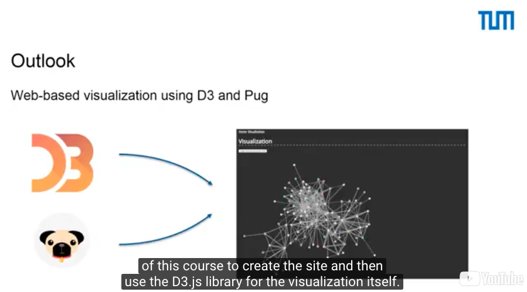
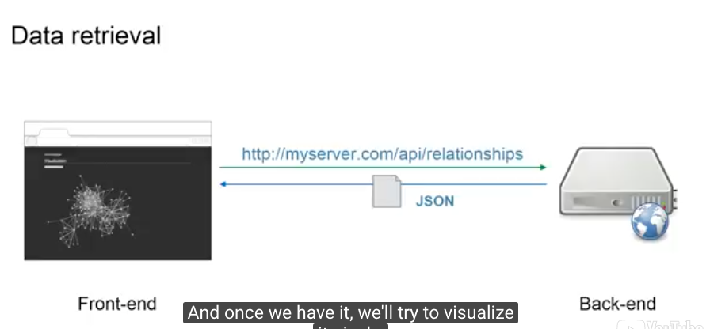
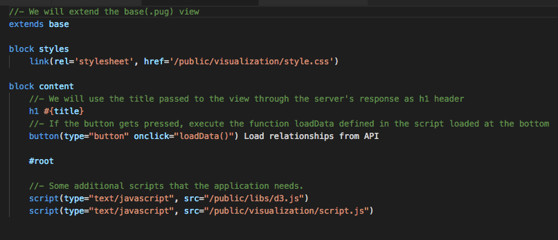
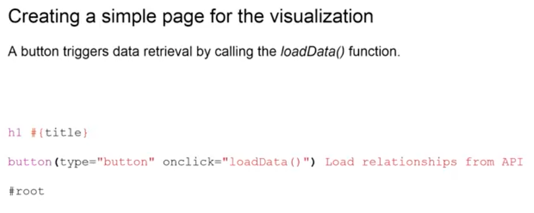
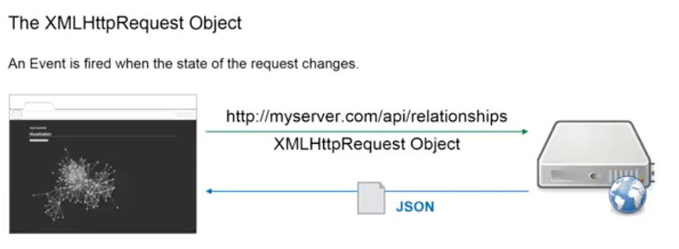
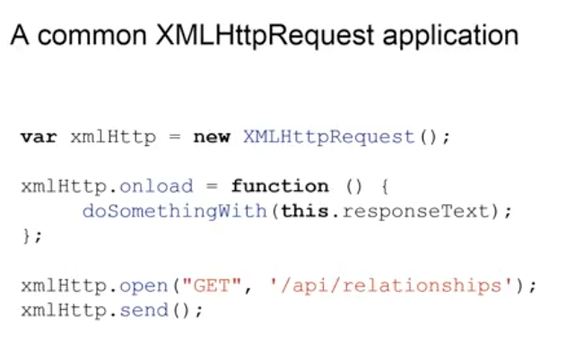

This part will deal with data visualization and we'll start off with data retrieval using HTTP requests. So, let's take a look at what we plan to do. At this part we're going to create a simple web site and retrieve data from the Node.js application that you built in previous lectures. That means, we are moving away from the back-end now and towards the front-end. We'll use data from a dataset called the Network of Thrones dataset and that contains a number of character interactions from the novel of "Storm of Swords". We will then use this data that we retrieved from the API and create a nice graph visualization of the interactions of these characters.
We will use the Pug templating engine that you have been presented in the last part of this course to create the site and then use the D3.js library for the visualization itself.
Let's take another look at the architecture of this application. The back-end is the Node.js application that you were presented previously and at this point, we're going to look at the front-end, which is going to be the website. This website will also contain JavaScript and JavaScript will be used to query our API for the relationships of these characters, which we'll then return them as JSON data. And once we have it, we'll try to visualize it nicely.
The first step in this is to use the Pug templating engine and compile template into an HTML file that will be displayed in a web browser. Then, with the help of JavaScript, we will create the backend server and get the data from there.
So, let's take a look at the code you were provided before. In the views folder of the app, you can find four files. You can think of these pug files as building blocks for the web site. These templates will be put together and then compiled into HTML. For example, the navigation file contains the navigation bar, obviously, which can then be referenced in other parts, for example, in the base file. So, we don't have to include the code for navigation in every site. The visualization.pug file is where the content for our visualization page will be hosted and we'll try to have a look at that in a second.
So here it is. It looks quite complicated on the first glance, but, basically, what it has are three major parts: It has a block for meta data, as in the head of the HTML file and it has a block for the content. And right on top, it also says extends base. This means, it will adhere to the basic structure that is defined in the base.pug file and then only check the content in the relevant areas. So, we have in the styles block linked a style.css file. We'll talk about that later. Right on the button, there are two JavaScript files. For one, we used the D3 library. So, we have that one linked and then we have another JavaScript file linked that will host the code for data retrieval and visualization. But let's take a closer look at the content itself.
There are three parts here. The title itself will be provided by the API or at the root of our application. We have a button. This button when clicked calls on the JavaScript file and will call the loadData() function. Within this function, we will define code that will create direct request to our API, receive the data and then create the visualization. And, finally, we have one more div with the ID root. This is where we'll inject the visualization using JavaScript and D3. So, this is what the page looks like. Again, it has the navigation bar on top, it has a title. In this case visualization and a button that when pressed will initialize the visualization and data retrieval.
So, let's have a look at what the data retrieval actually looks like. This will happen in the JavaScript file.
You can find the file in the visualization folder, which is hosted in the public folder of our application. The script.js will host all the code we need. So, let's talk about that code.
Creating HTTP requests is a classic application of front-end and even back-end JavaScript. There are many libraries out there, which try to make this a very simple task. JQuery is a very popular one, but we will try to stick with the built-in JavaScript functions for now. One way of doing that is the so-called XMLHttpRequest object that is built into JavaScript. When instantiated, this can be sent off to any given URL.
In this case, our API end point, which will return the relationship data. And it is also the object, which supports a number of events that will be fired at various stages of this process. For example, when the request arrives at the back-end, there's an event for that. When it starts sending data, there's a second event for that. And there's another event when it is finished with transferring the data back to the front-end. And this is the one we will be looking at on the next slide.
So, here, we see the code that is needed to send the HTTP request using native JavaScript function. It is rather simple
in general. It has three major parts. The first part is instantiating the request object and saving it into a variable.
Then, we need to define what should happen once this data retrieval is finished. Meaning, as soon as the data has
been sent back to the front end, this onload event is called and we now need to define what happens when this onload
event is called. We do that by defining an anonymous function and since this function is called directly on the request
object, we can actually access the request object using the this keyword. And the interesting part in this case is
the responseText; this is where the data received from our API will be hosted. And then, we can do something with
that, symbolized by the do something with function, in this case. And, lastly, we need to tell the request object
what kind of HTTP request it is. In this case, it's a GET request and we have to tell it where to send it off to.
In this case, our API - the relationship end-point. And, finally, we need to send it away. That is all the code is
needed to create a JavaScript HTTP request.